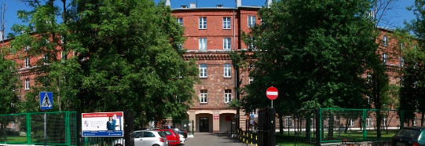

Miejsce
Gościć nas będzie Zespół Szkół Licealnych i Technicznych nr 1 w Warszawie przy ulicy ul. Wiśniowej 56. Na poniższym rysunku przedstawiona jest szkoła. Już po samym zdjęciu można domyślać się, że budynek jest niezwykły.Dziękujemy za zangażowanie, ze strony szkoły przy pomocy organizacji tak wspaniałego wydarzenia :) Na pewno zostanie to docenione przez rodziców i najmłodszych uczestników.

Szkoła znajduje się w samym centrum. TODO: Napisz możliwości dojazdu i parkowania.
Data
Wydarzenie odbędzie się 7 czerwca 2014 roku.Czerwiec jest miesiącem idealnym, do organizacji takiego wydarzenia zarówno dla dzieci, organizatorów jak i rodziców :)